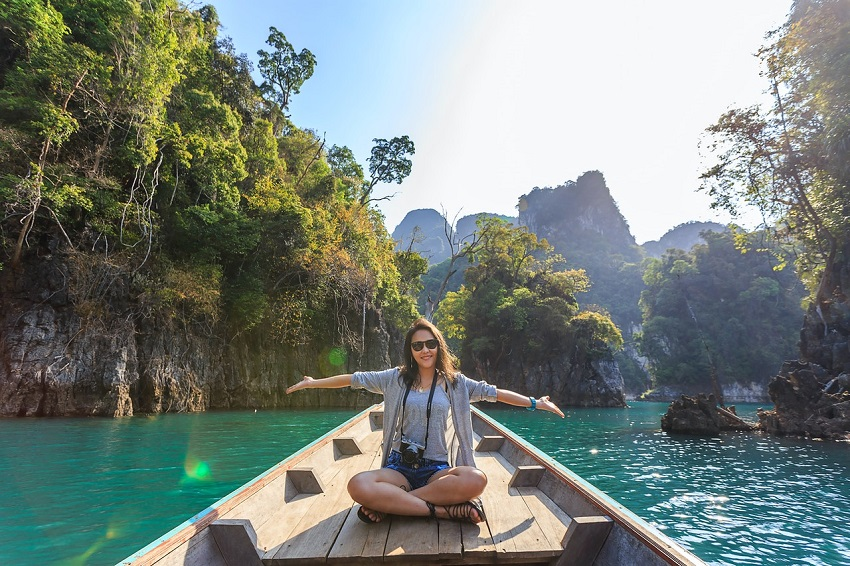
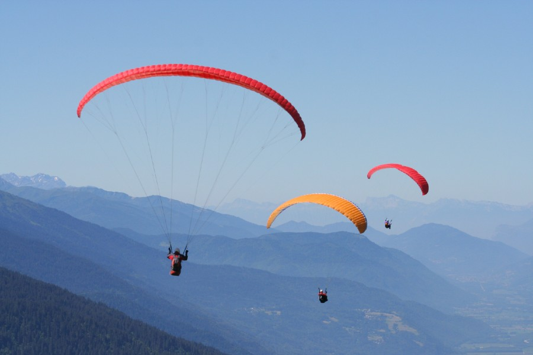
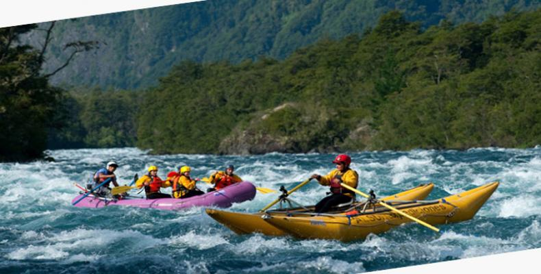
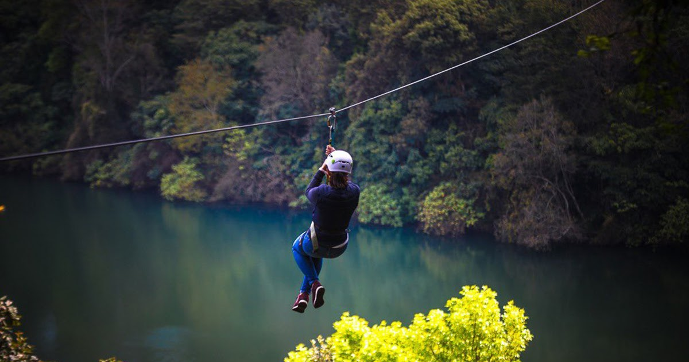
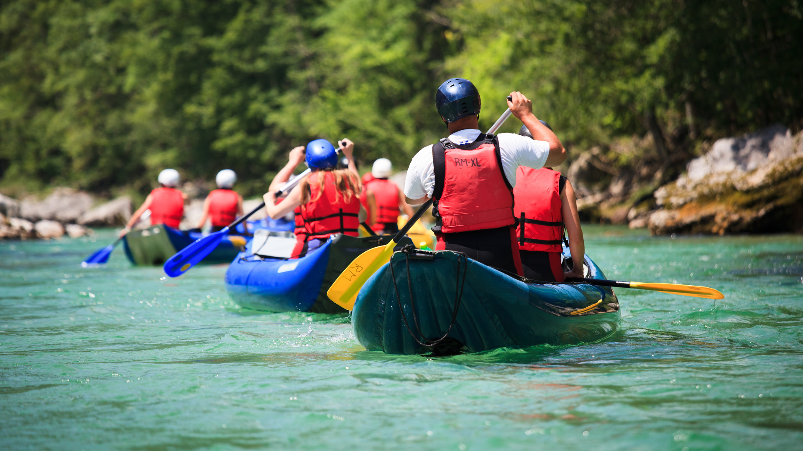
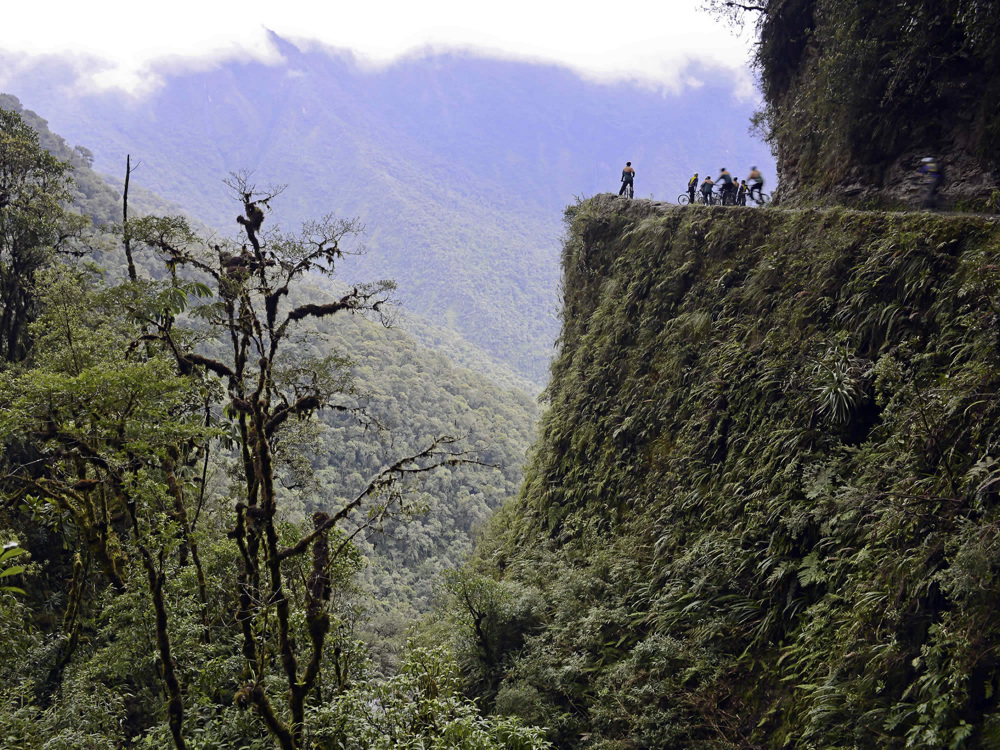
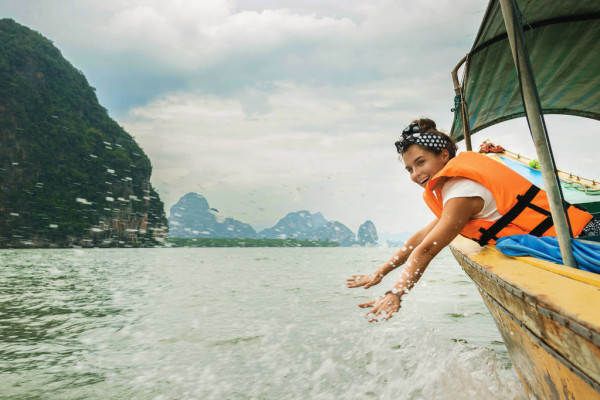

Empresa de turismo --------------------------------------
Magri Turismo
Magri Turismo es una compañía creada en 1973, hoy en día una de las líderes en el mercado local con mucha
experiencia en turismo dentro y fuera de Bolivia. Magri Turismo es un grupo dinámico y dedicado, con diferentes
áreas de especialización, comunicación en distintos idiomas y con la meta de ser los mejores en brindar un servicio
personalizado. Con el fin de mostrar al mundo la riqueza cultural y geográfica de Bolivia, Magri ha creado una
extensa red de operaciones en el país que brindan acceso a atracciones turísticas en regiones remotas y cercanas.

Vision
Ser líderes en Turismo de alta calidad en Bolivia.
Experiencia
Con más de 40 años en el mercado turístico sabemos cómo hacer para que su viaje en Bolivia sea excepcional e inolvidable.

Calidad y seguridad
Contamos con la certificación ISO 9001:2015 para darle a nuestros clientes la mejor calidad de servicio, además que cuidamos cada detalle de su viaje para brindarle la mayor seguridad durante toda su expedición.

Lugares unicos
¡Nuestro país cuenta con una diversidad de paisajes únicos que solo están esperando por ti para ser explorados!

A tu medida
Porque sabemos que eres especial, hemos desarrollado una variedad de programas excepcionales dentro de nuestro país hechos a la medida para cada tipo de explorador, estás listo para elegir el tuyo?

Responsables
A través de diversos programas turísticos, apoyamos a tres proyectos nacionales que involucran temas como sociedad, protección de los animales y cuidado del medioambiente.

Inovacion
Cada año nos preocupamos por crear programas especiales para ustedes con el fin de crear experiencias inolvidables para que lleven a casa el mejor recuerdo de Bolivia.

Aqui un breve video de la presentacion a una de los lugares turisticos visitados en otros paises